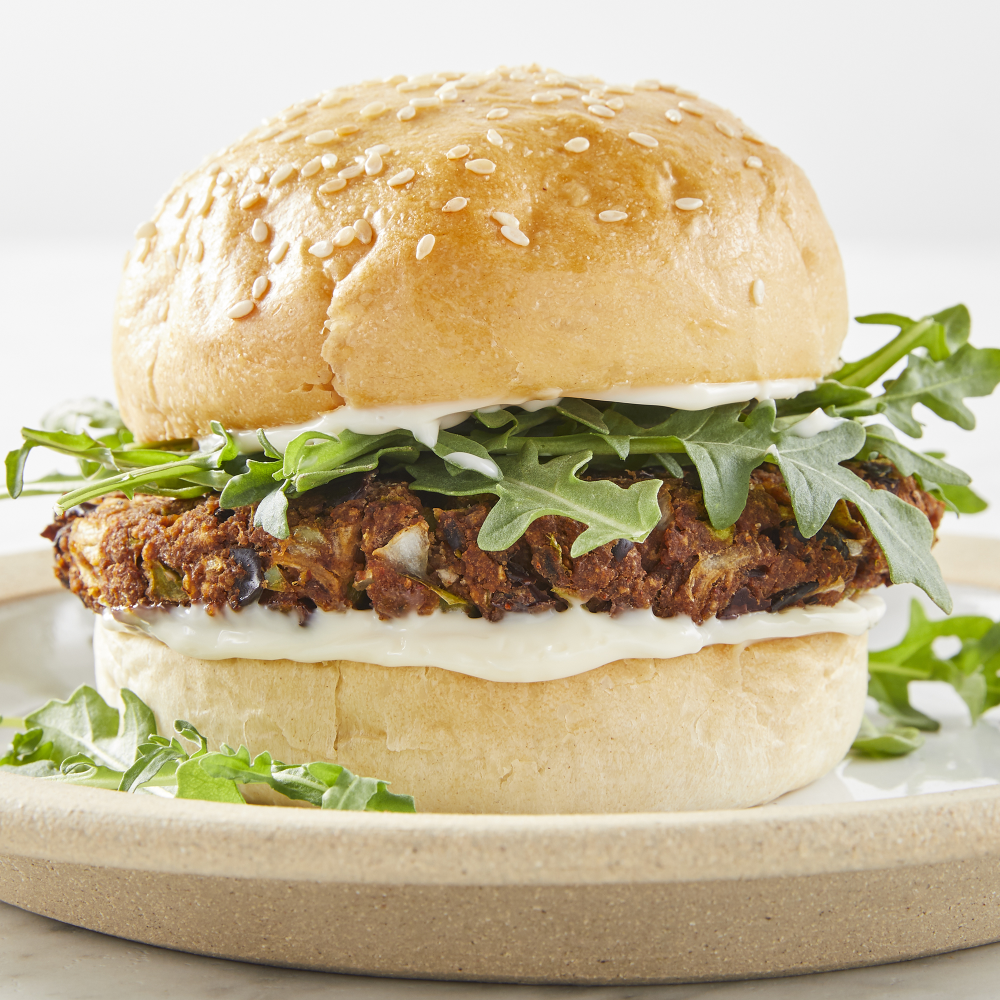

Veggie Burger

Easy to prepare burgers. A true vegetarian delight!
These vegetarian burgers are based on black beans.
- cooking spray
- 1 can black beans, drained and rinsed
- ½ green bell pepper, cut into 2 inch pieces
- ½ onion, cut into wedges
- 3 cloves garlic, peeled
- 1 egg
- 1 tablespoon chili powder
- 1 tablespoon cumin
- 1 teaspoon Thai chili sauce or hot sauce
- ½ cup bread crumbs
- Preheat an outdoor grill for high heat. Lightly oil a sheet of aluminum foil with cooking spray.
- Mash black beans in a medium bowl with a fork until thick and pasty.
- Finely chop bell pepper, onion, and garlic in a food processor. Stir chopped vegetables into mashed beans.
- Stir together egg, chili powder, cumin, and chili sauce in a small bowl. Add to the mashed beans and stir to combine.
Mix in bread crumbs until the mixture is sticky and holds together. Divide the mixture into four patties and place on the prepared foil.
- Grill on the preheated grill for about 8 minutes on each side.
Click here for the original link of the recipe.